C) L'évolution graphique du chiffre
| Neuf signes et un zéro, significateurs de tout et de rien. Voila en quoi résidait l'apport vraiment essentiel de la notation numérique indo-arabe. Dès lors, tous les signes qui jusque là avaient représenté des valeurs supérieures à dix retournaient au néant. La série des chiffres que les arabes avaient introduit en Espagne n'était pas la seule qui existait en Europe, il s'en fallait de beaucoup. Les symboles variaient selon les contrées. Un même signe pouvait changer de valeur d'un climat à l'autre (par exemple, un rond signifiait 5 en hindi et zéro en gubari ) :
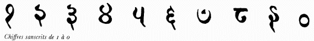 Avant de se stabiliser dans les graphismes qui nous sont familiers, les chiffres laissèrent leur dessin évoluer. Certaines formes disparurent, d'autres se perpétuèrent avec une obstination remarquable. C'est ainsi par exemple que si dans la série des signes égyptiens, le signe « Y » représente le nombre 2, on le retrouve avec la valeur 5 dans l'inscription indienne de Nana Ghat, ainsi que dans les alphabets sanscrits puis arabes. Nous allons voir son évolution à travers différentes tables d'illustration montrant les transformations graphiques qui lui ont été apportés, des premières représentations issues du sanscrit jusqu'au polices actuelles de caractères. 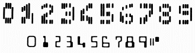
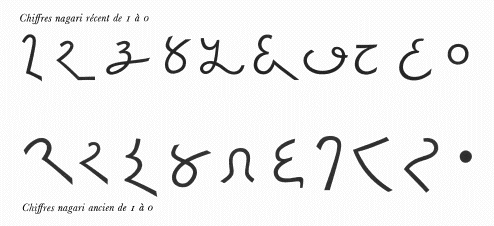
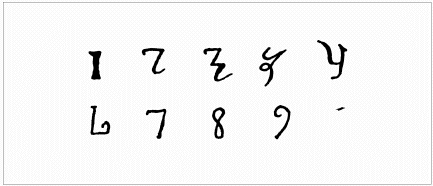 Représentations du chiffre plus récentes, venues du Nord de l'Espagne.
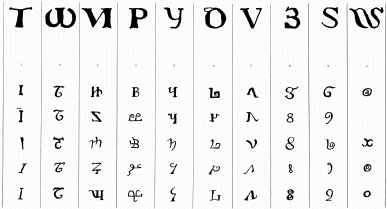 Exemples de chiffres manuscrits du Xe siècle. On retrouve certains graphismes, tel que le 1, le 8 ou le 9.
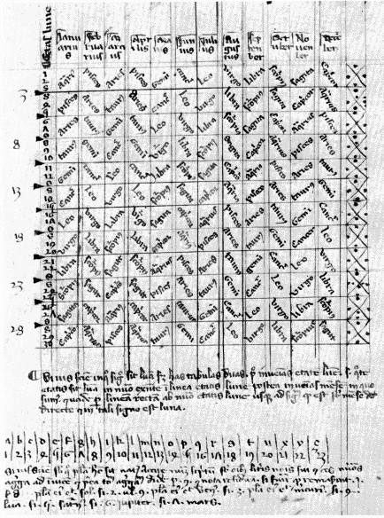 Traité d'astrologie datant du XIVe siècle. Le 1, le 2 et le 3 ainsi que le 6, le 8 et le 9 ont acquis la forme comtemporaine.
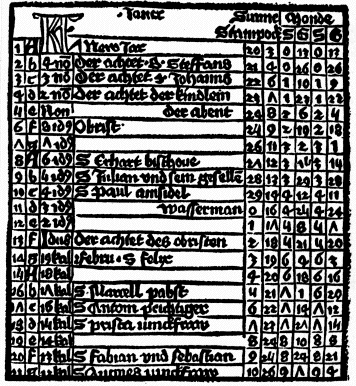 Premiers caractères imprimés (1473). Sur ce calendrier, le calendrier, le graphisme des chiffres est semblable à celui de la page précédente. Cependant le 4 a quasiment atteint son graphisme moderne : reste le 5 et le 7.
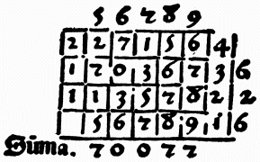
Avec l'ascension de l'imprimerie, les chiffres ont été légèrement déformés pour donner une forme semblable à celle courante de nos jours.
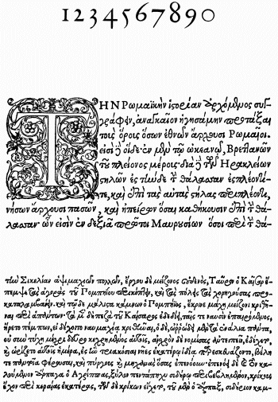 Les "Grecs du Roi", écrit en 1541. on voit que les chiffres ont acquis leur forme quasi-définitive.
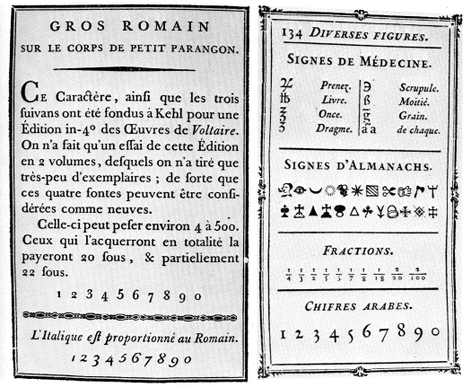
A partir de 1700, les imprimeries
construisirent différentes formes de caractères typographiques,
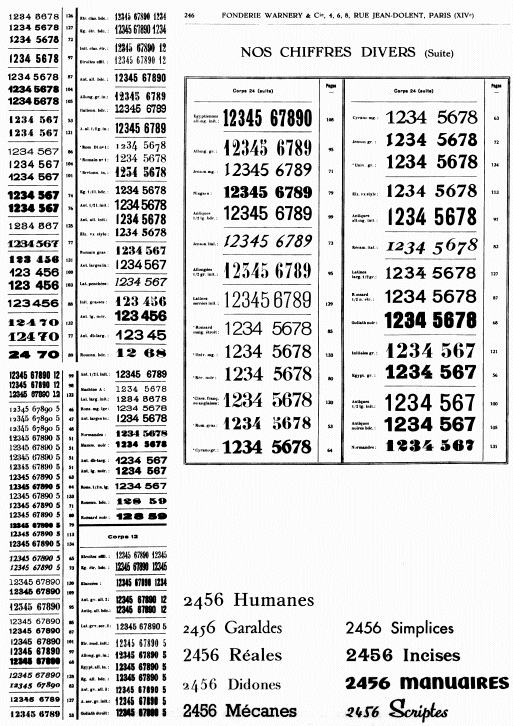 Caractères de la fonderie Warnery, 1934. a partir de 1900, une centaine de polices de caractères furent inventées.
|